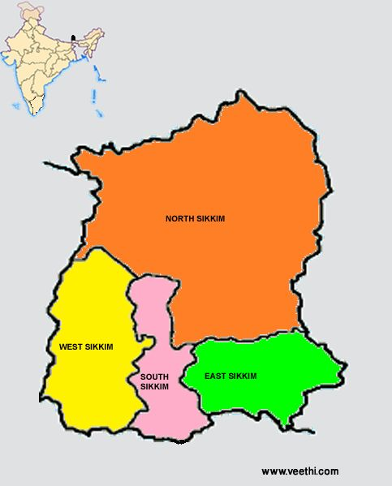

| Name: | Sikkim |
|---|---|
| Capital: | Gangtok |
| Language: | English, Nepali, Bhutia, Lepcha |
| Chief Minister: | Pawan Chamling |
| Total Districts: | 4 |
| Population: | ~610,577 (as per 2011 census) |
| Formation: | 16 May 1975 |
| Area: | 7,096 km² (28th largest in India) |
| Borders: | West Bengal, Bhutan, Nepal, Tibet (China) |
| Coastline: | None (Landlocked State) |
Know more